Free sewing patterns, no ads, no sign-up
Design your safari jacket
You choose your style, and the jacket takes shape before your eyes. You start from your size and refine your measurements: from ready-to-wear to made to measure, the pattern is calculated for you.
Design my safari jacketAlso: a summer dress, berets, bucket hat, pockets, pen and glasses holders, epaulettes, sleeve tabs.
What’s new
- : the Béa dress, a summer dress to design.
- : design your safari jacket live.
- : Basque beret, centred or asymmetric.
Choose a family
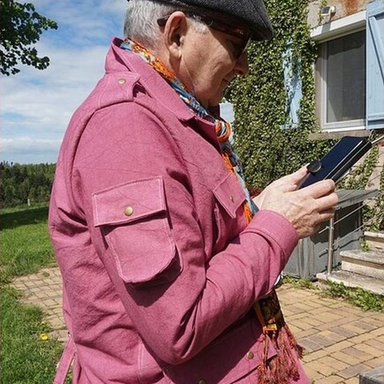
Safari jackets
Sleeves, pockets, pen holder: your choice
Difficulty●●●○ to ●●●●
Design my safari jacket
Dresses
A loose summer dress with a square neckline and contrasting trims.
Difficulty●●○○ to ●●●○
Design my dress
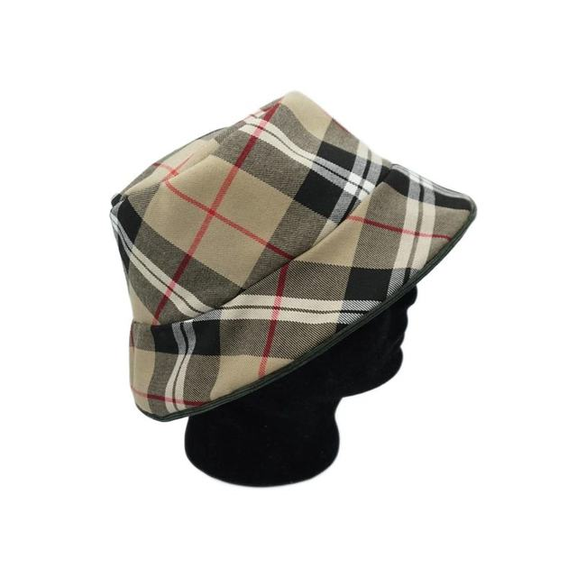
Hats
Difficulty●●○○
Make a hat
These small pieces can be sewn onto the safari jacket, or onto any jacket or shirt.
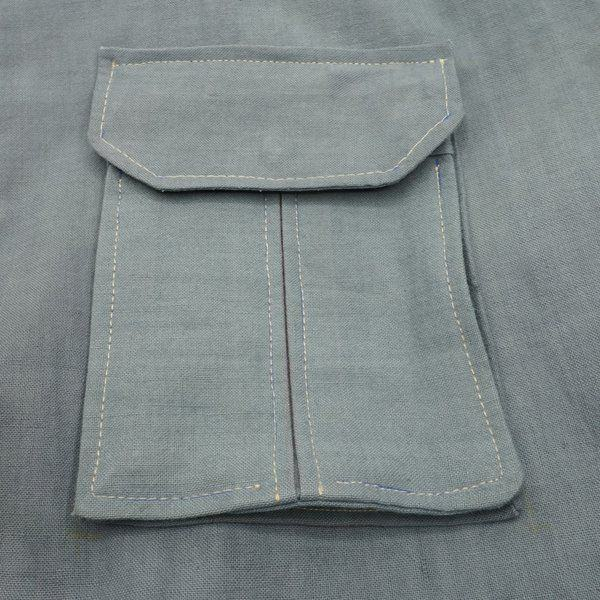
Patch pockets
Difficulty●○○○ to ●●●○
Make a pocket
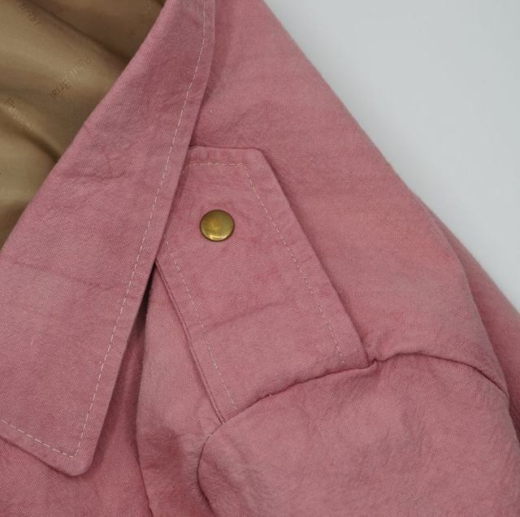
Epaulettes
Difficulty●○○○
Make epaulettes
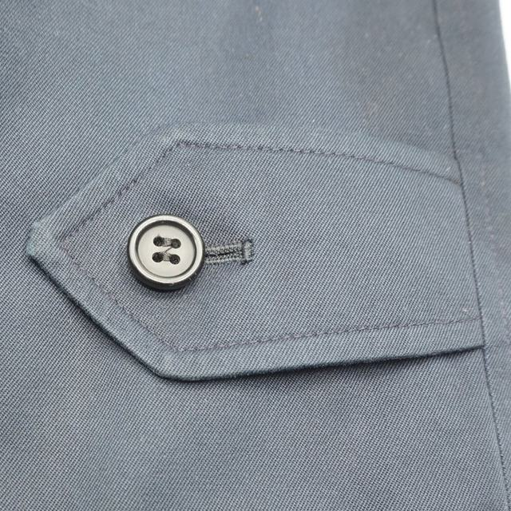
Sleeve tabs
Difficulty●○○○
Make sleeve tabs

Pen and glasses holders
Difficulty●●○○
Make a pen and glasses holder
How it works
- 1Choose your style.The pattern, then its options: sleeves, pockets, flaps… A drawing shows you the result.
- 2Enter your measurements.One at a time, with an explanatory illustration. They are saved on your device, and nowhere else.
- 3Download and sew.An A4 PDF to print at 100%, or a one-page PDF for projection, with the sewing guide.
Made with these patterns
Sewn from the patterns on this site. Tap a photo to open its pattern.
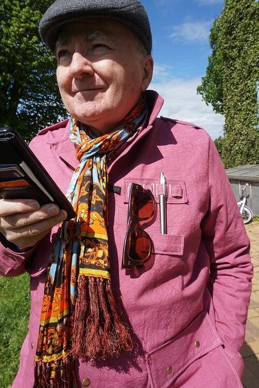
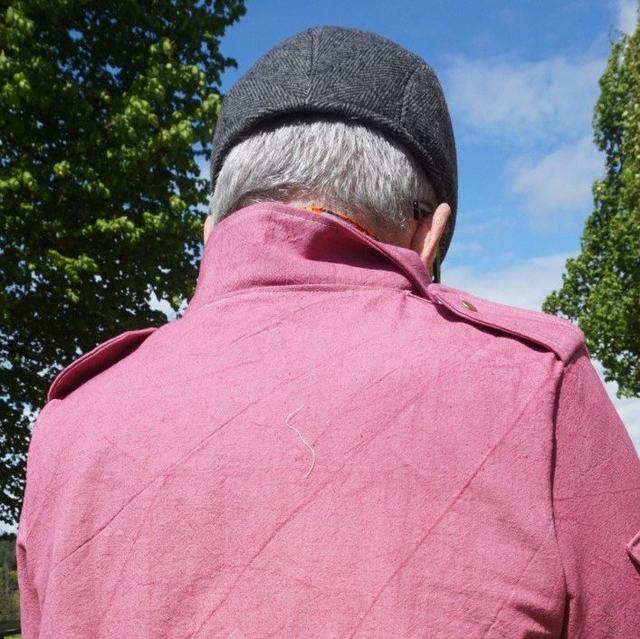


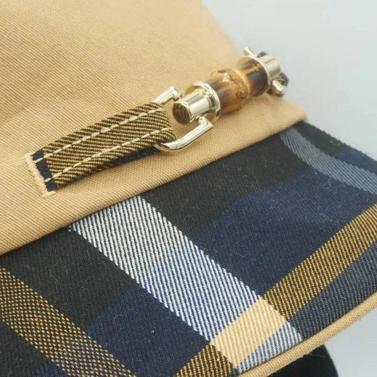
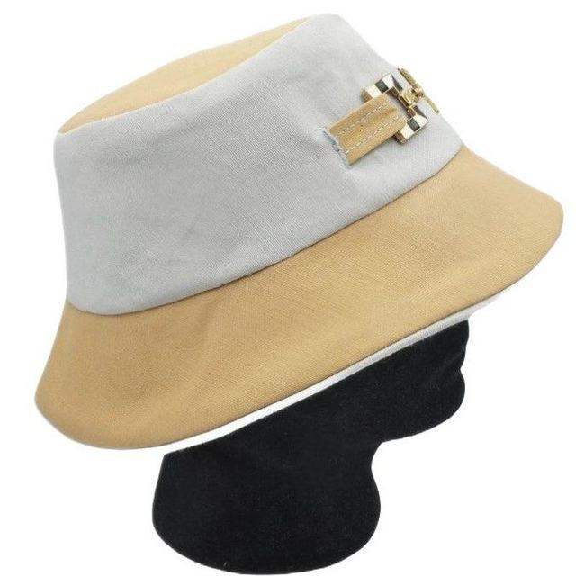


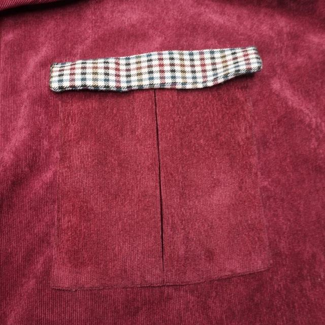


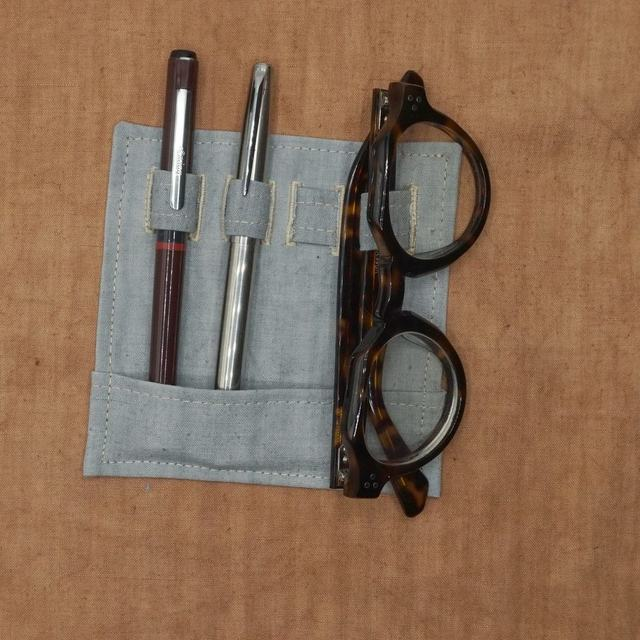
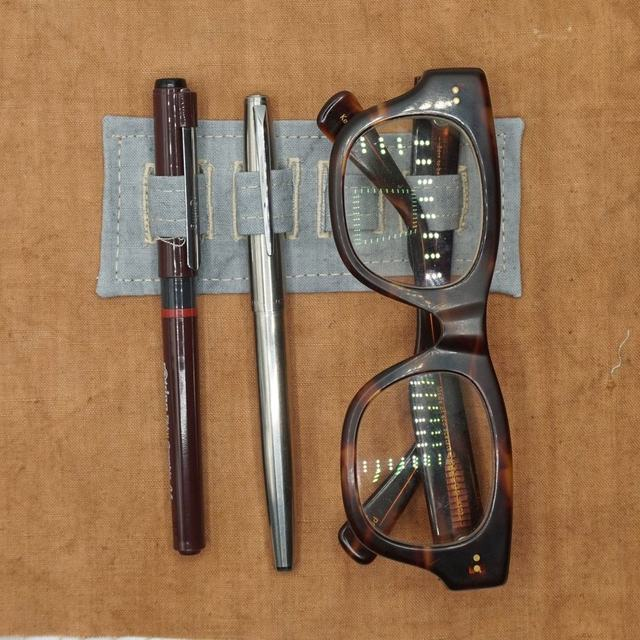
The site in brief. Free parametric sewing patterns: a safari jacket to design yourself, unlined or lined, a summer dress, hats (bucket hat and berets) and garment details (patch pockets, epaulettes, sleeve tabs, pen and glasses holders), with 26 basic shapes and over 100 pocket combinations. You choose your style and enter your measurements: the pattern is calculated in your browser and downloaded as an A4 PDF at 1:1 scale, or as a single page for projection. A test square lets you check the print.